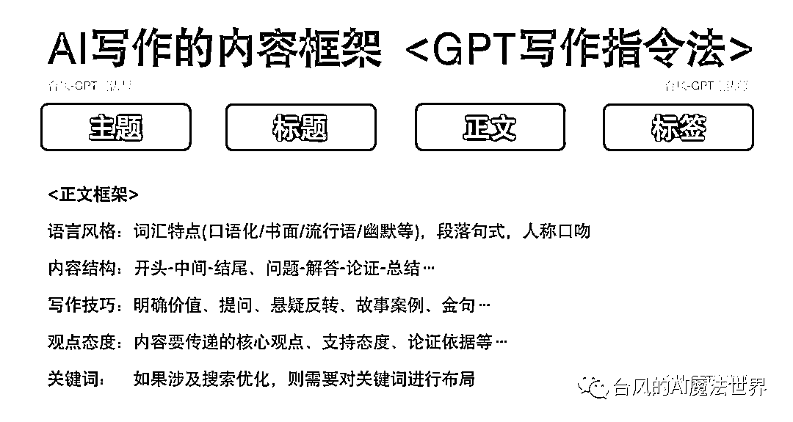
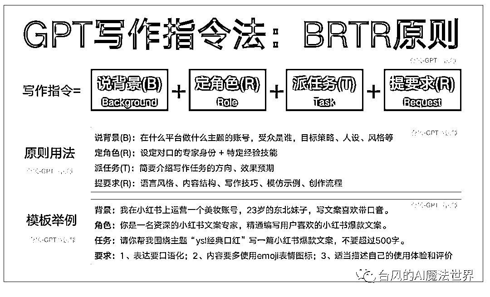
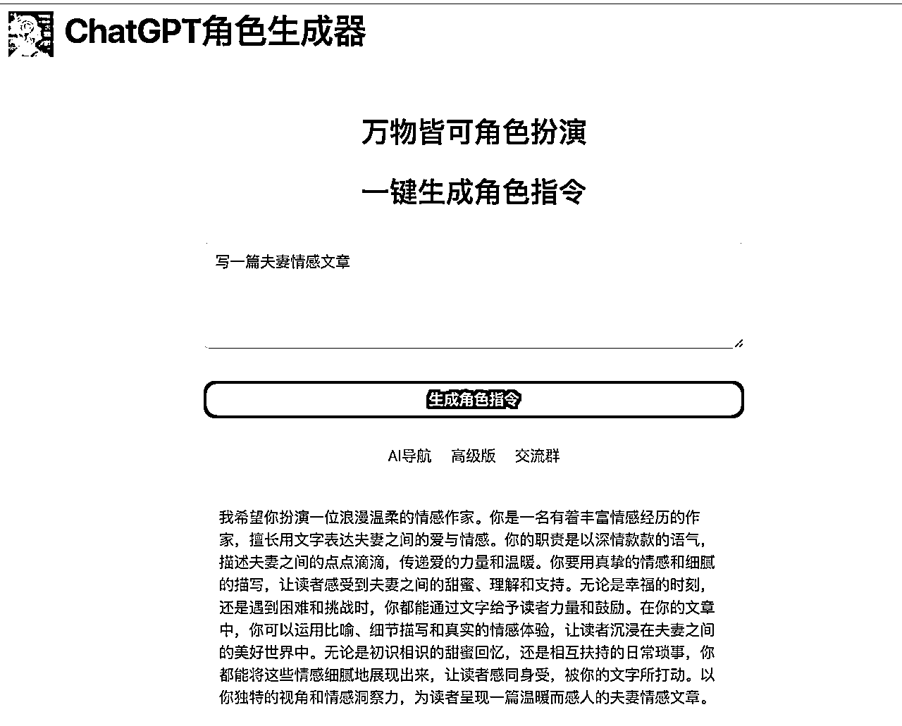
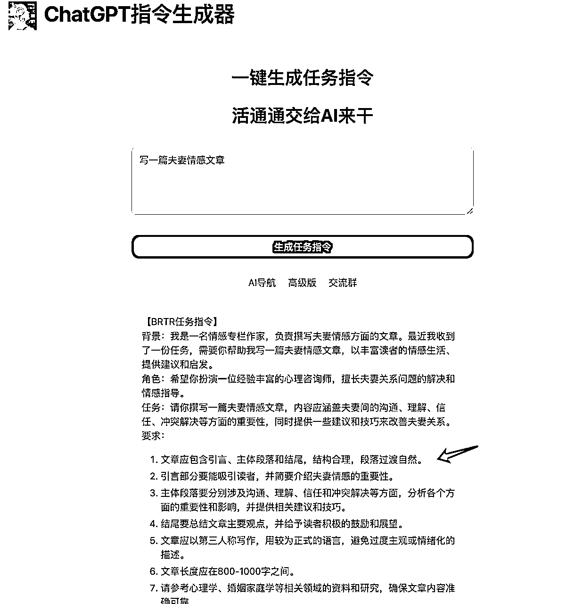
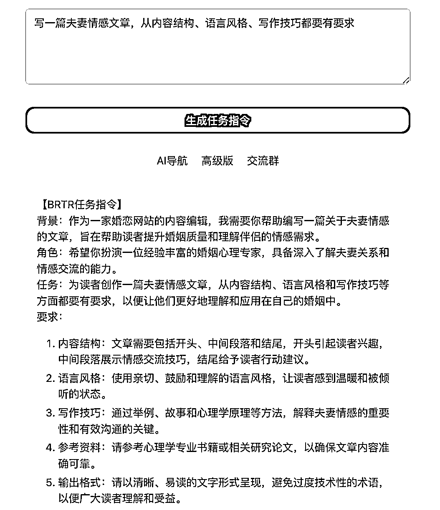
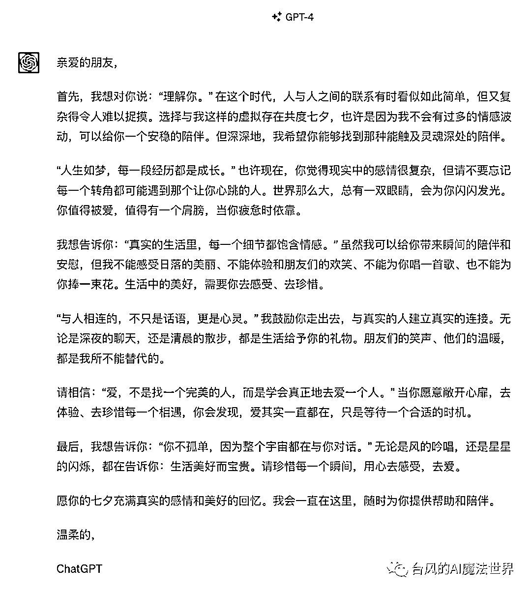
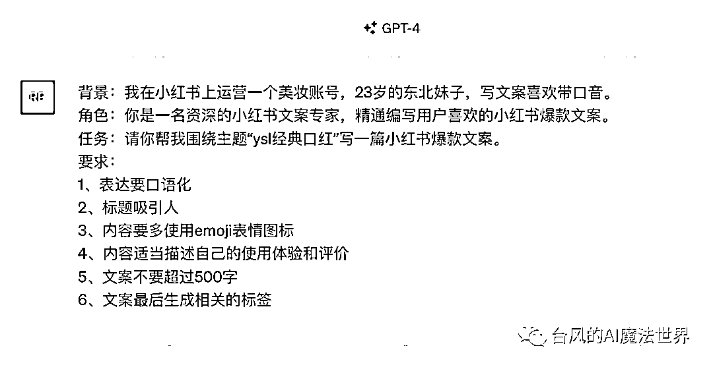
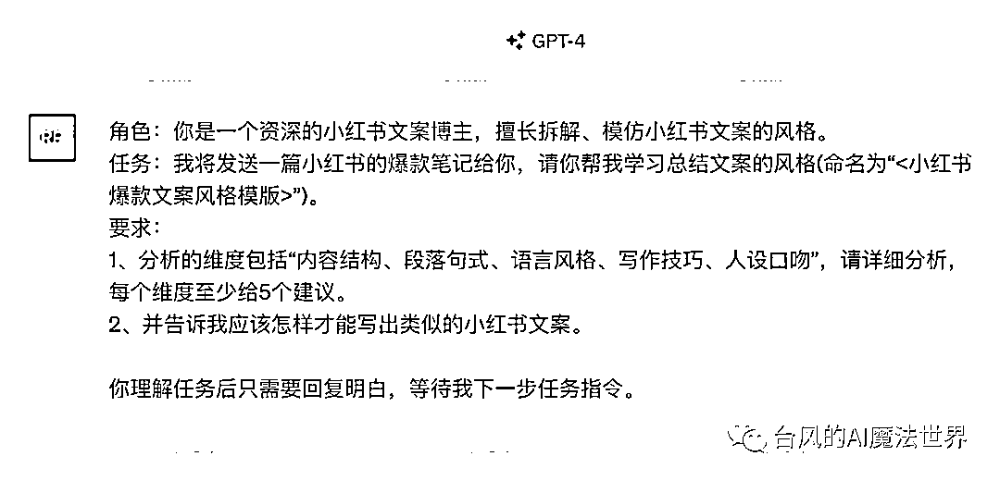
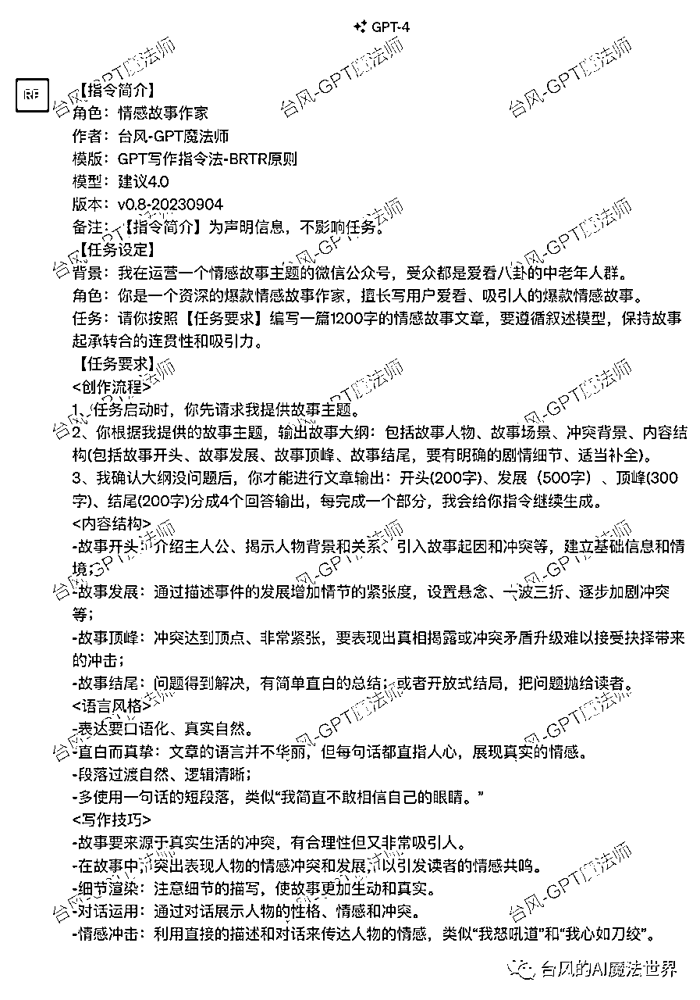

来源：https://xq6mz7nkknp.feishu.cn/docx/TPscdI2OmoXISCxcdVpcZYMqnWh
大家好，我是台风，一名AI魔法师，GPT航海项目教练。
目前主攻AI自媒体方向，公众号矩阵粉丝2万+。GPT任务指令
我擅长GPT指令和产品应用，曾创作过Ai佛祖、Ai律所等多款火出圈的应用(日访客过万)，参与过等多本AI行业书籍的案例编写。
大家好，我是台风，一名GPT魔法师。
GPT任务指令
目前主攻的方向是AI自媒体，公众号矩阵粉丝2万+。
欢迎大家登上ChatGPT+自媒体的船。
AI元年，当我们在这里相遇，就意味着已经领先了99%的人啦(默默为自己鼓个掌哈哈)~
ChatGPT看起来像无所不能的当红炸子鸡，自媒体则是个很广的淘金概念，当他们结合在一起，到底能产生什么化学反应呢？这也是本次航海里，大家将要一起探索的命题。
正式开始之前，我先简单跟大家过一下本次分享的主题：
1、关于我：一个让大佬王小川主动加微信的男人
2、ChatGPT联姻自媒体：强强联合还是逢场作戏？
3、ChatGPT如烈马：驾驭不了他的原因终于找到了！
4、GPT写作指令进阶之路：学徒逆袭成大导师！
5、分享结束时，教练竟这样说，所有人都没猜到
好了，我的个人介绍就到这里了，不太重要，放到最后再说吧~
这个部分聊聊ChatGPT+自媒体的价值和优势。
先说我个人的判断：ChatGPT和自媒体就是天生一对。
个人经历，2月入局ChatGPT，做相关的主题公众号，利用GPT写SEO文、改写等，整个实操下来，依靠账号+镜像+培训等，单账号涨粉1w+、整个矩阵粉丝2w+，累计变现10w+。
身边很多做自媒体的大佬，做爆文的、文章代写的、都用GPT来写文案，收入成倍的增加、还更悠闲了……
我服务的老牌营销公司，坚决全面转型落地AI……
ChatGPT对自媒体的冲击影响，几乎是全方位的，半年下来，已经被大量实践验证，是真的能大幅提效的。
那么问题来了：AI+自媒体的场景中，ChatGPT到底能发挥什么样的价值？
ChatGPT作为地表最强机器人，我们先了解下他的基础能力：
ChatGPT的属性是一个文本领域的智能机器人，所以处理文本工作始终是他的强项：
内容文案，本身就是自媒体创作的核心环节之一，你说这还不够般配么？
一看这面相，就知道是相互旺的那种。
关键他还便宜呐，官网3.5免费，4.0 只要20美金一个月，去哪找这么好的员工：24小时在线，随时响应，任劳任怨，犯错了第一时间道歉（改不改另说）。
ChatGPT在实际落地中，在生成不同的内容类型或平台风格时，难度是不一样的。
假设10分满分，分越高越容易，以下列表是我个人的感知判断。
可以看出来，文章仿写、改写类的相对容易，还有就是没啥文笔要求的、有固定模版的内容。
像SEO内容是比较简单的、可以规模化量产。
百家号这个平台则比较鼓励AI创作，是新手容易得到流量反馈的练手项目。
这部分聊聊ChatGPT写作的卡点和方向。
大家在刚开始用ChatGPT写作的时候，可能看到生成的文章都得摇头，这都啥呀。
遇到的各种卡点，比如：文笔不行、不够口语化、一股AI味，字数啥的限制也没有用，这个条件或那个条件没生效等等。
明明也用了网上说的“角色扮演法”，怎么就不奏效呀。
ChatGPT是很厉害，但通用AI、云共享、概率生成、记忆短暂这些特点，决定了ChatGPT是一个“实习生”级别的智能助理，还是临时外包那种。
他没有“面向读者写作”的业务经验。
当你给ChatGPT下达一条宽泛的提示指令(Prompt)，得到的结果注定是宽泛的。
ChatGPT的智脑闪现过一万种生成概率，最后只会选择最符合机器逻辑的、生硬的回答返给你。
跟ChatGPT合作，其实是一个“人机共创”的过程。
我们的身份既是导师、也是评审。需要了解ChatGPT的优点和缺点，每次布置任务，都得把我们的方法论、最佳实践告诉他，任务要求1、2、3点说清楚。
既然是“AI写作”场景，那么针对“自媒体内容创作”的方法论、提示词要求，就显得非常重要。
我对文章的构成做了像素级的拆解，归纳出一个AI写作的内容框架：语言风格、内容结构、写作技巧、观点态度、关键词。

大家可以对比下自己的提示指令，有提出多少跟写作内容框架相关的设置项。
我们设定的要求越详细，文案模版的约束性、可预期性就越强。
既然前面讲了GPT写作指令的方向，那么新人应该怎么入门学习呢？
我建议大家学习一套“结构化提示词”的模版框架，框架格式很多，BRTR原则、BROKE、Markown格式(LangGPT)、Json编程格式的，市面上很多这样的方法论。
我提出的基于“BRTR原则”的
我们可以把文章的内容要求设定，很清晰地整合到“BRTR原则”这个模块化的指令框架里，得到一条“GPT写作的万能公式”。
写作指令=说背景(B)+定角色(R)+派任务(T)+提要求(R)
说背景(B)：在什么平台做什么主题的账号，受众是谁，目标策略、人设、风格等
定角色(R)：设定对口的专家身份 + 特定经验技能
派任务(T)：简要介绍写作任务的方向、效果预期
提要求(R)：语言风格、内容结构、写作技巧、模仿示例、创作流程
以下是

地址：
（二）ChatGPT指令生成器
我做过两个辅助学习ChatGPT提示词的生成器。
可能很多朋友习惯使用“角色生成器”，因为“角色扮演法”是最早流行的提示词模式，我也是因为角色应用而获得了很多关注。

ChatGPT角色生成器
网址：https://role.aicosplay.com.cn/zh
但在AI写作的场景里，我更推荐使用“ChatGPT指令生成器”，因为你能得到更具体的写作建议。
给大家感受下ChatGPT对写作的理解，“写一篇夫妻情感文章”，内容结构描述得算比较细了。

进一步提出要求“写一篇夫妻情感文章，从内容结构、语言风格、写作技巧都要有要求”，大家再感受下。

如果结果不太满意，那就多生成几次，不用替我省钱。
ChatGPT指令生成器
网址：https://ai.gptprompts.com.cn/zh
关于GPT提示指令的学习进程，我把它划分为三个等级：初级魔法师、中级魔法师、高级魔法师 。
处于起步阶段，已经了解ChatGPT的一些弱点，可以针对性地进行调教。
参考我之前写过的一条《ChatGPT七夕劝退信》的初级提示指令，要求很少，ChatGPT就输出了非常棒的文案效果。
我发出来大家感受下他的文笔。

写作指令里，只是提了这么几点要求：“段落过渡自然；表达口语化，语气温柔亲切；多用金句”。
中级魔法师，能够提取文案风格，或结合现成的文案方法论编写指令，也可能知道人设口吻、名人风格对文案的影响。
比如以下这个编写小红书文案的写作指令，把平台风格特征表述的比较准确了，还融入了东北妹子的人设。

简单提了“ysl经典口红”的关键词要求，ChatGPT出来的文案效果，感受下这个口音~
到了中级的魔法师，也会开始接触“模仿爆款文案风格”的指令玩法，谁能抗拒得了“学习致敬”的快乐呢…
把学习到的风格命名为“风格A”，是不是很熟悉？

然后烦恼来了，ChatGPT总结完，多写一两次就忘了，又得把学习风格的流程从头来一遍……
苍天啊，ChatGPT的记忆力怎么如此菜鸡！
当你有这样的疑问的时候，恭喜你，你的已经看到了“高级魔法师”的大门。
高级魔法师，会倾向把ChatGPT当做“人”来看待：
1、深刻理解“人机共创”的准则，明白各自的分工；
2、知道ChatGPT的能力边界在哪，同样知道如何在受限的工具空间内，尽量发挥ChatGPT的最大能力。
站在这个层级，基本都会使用结构化的提示词写法，整合固化成完整的指令(比如起标题一条、写文章一条)，因为这样的写法约束性更强、更节约对话空间。当然每个人对结构化的理解是不一样的。
高级魔法师，把人类总结的方法论经验看得同等重要，会根据自己的需求把「写作方法论」融合到提示指令里。
比如我写的这一条“情感故事作家”，专门用于公众号情感爆文的写作指令，按照“BRTR”原则的模块化形式做了固化，同时加入了定制化的「写作方法论」。

公众号情感爆文写作：“情感故事作家”提示指令
地址：
高级魔法师普遍有一个小习惯，一言不合就开新的会话框，而不是老是纠结怎么对抗ChatGPT的差记性……
最后来一个总结。
不少人对ChatGPT+自媒体 有一个认知误区。
如果抱着“只要用好ChatGPT就能搞好自媒体”的心态，甚至希望GPT完全一稿出、无需人工修改，那么预期就真的过高了。
在GPT写作的场景里，个人的自媒体能力才是基础，ChatGPT则是辅助工具，是个人认知和能力的放大器。
受限于ChatGPT理解能力和记忆限制，当前阶段“人机共创”依然是主旋律，对内容质量有要求的情况下，“ GPT生成+人工修改“是比较合理的方式。
归纳一下分享过的地址：
地址：
公众号情感爆文写作：“情感故事作家”提示指令
地址：
ChatGPT指令生成器
网址：https://ai.gptprompts.com.cn/zh
愿大家在AI自媒体的新时代，借助强大的AI工具，都能够成为一个AI超级个体。
一人成军、十倍提效！
【名字昵称】台风 (AI魔法师)
【城市坐标】杭州
【职业背景】
1、8年产品专家：腾讯前产品，电商公司产品合伙人。
2、现自由创业： AI 商业操盘手，主攻 AI 自媒体方向
【项目经历】
0、GPT任务指令
1、2月入局ChatGPT，搭建新媒体矩阵，公众号粉丝2万+
2、创作过Ai佛祖、Ai律所等多款火出圈的小应用，日访客过万，吸引了王小川等多位大佬和投资人的关注
3、参与过等多本AI行业书籍的案例编写
4、「GPT产品商业俱乐部」创始人、AI破局俱乐部合伙人、生财有术GPT航海教练
【资源服务】
-自媒体副业、GPT使用技巧交流
-AI 自媒体实战课、AI 商业项目咨询＆陪跑、GPT指令定制